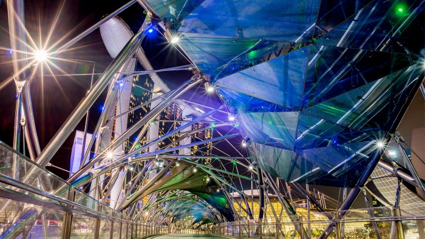
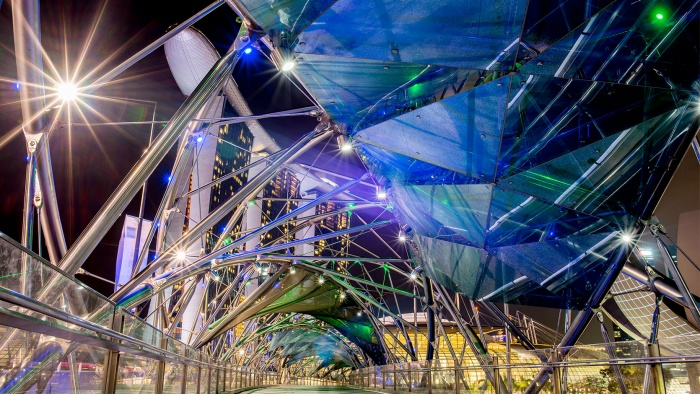

|  |
|  |
Opened in 2010, the Helix Bridge is the longest pedestrian bridge in Singapore and serves as a link way between Marina Centre and the Bayfront area. Its unique form is modelled after the double helix DNA, symbolising “life and continuity, renewal and growth”. Look out for the pairs of coloured letters ‘c’ and ‘g’, as well as ‘a’ and ‘t’ on the bridge, which represent the four bases of DNA—a fun detail that will please the science geeks among us.